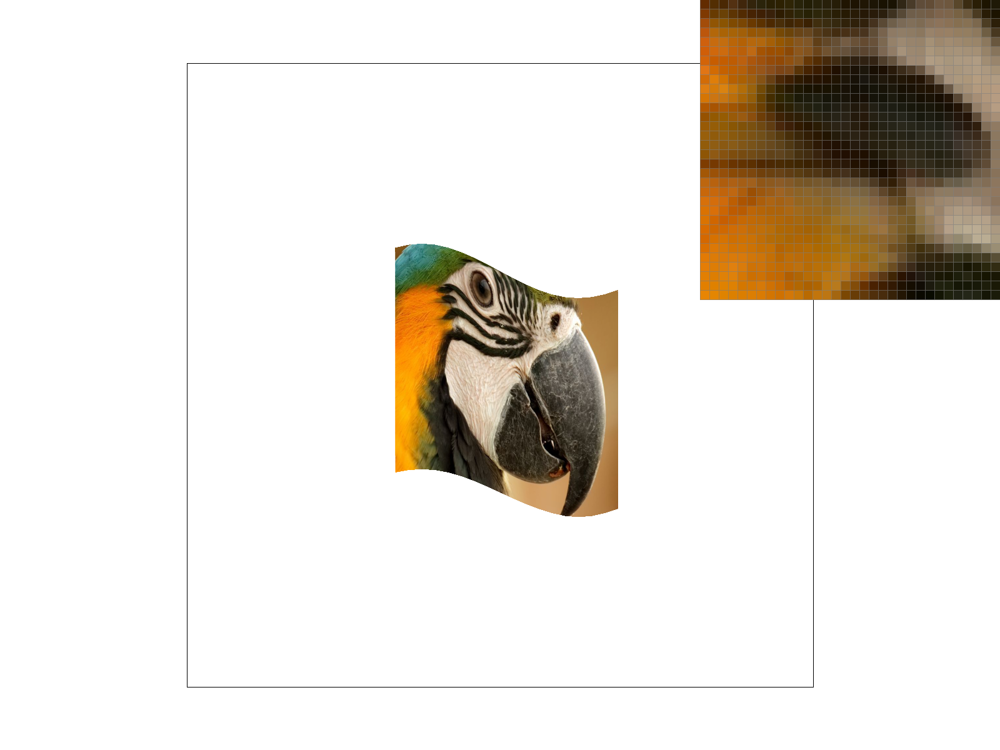
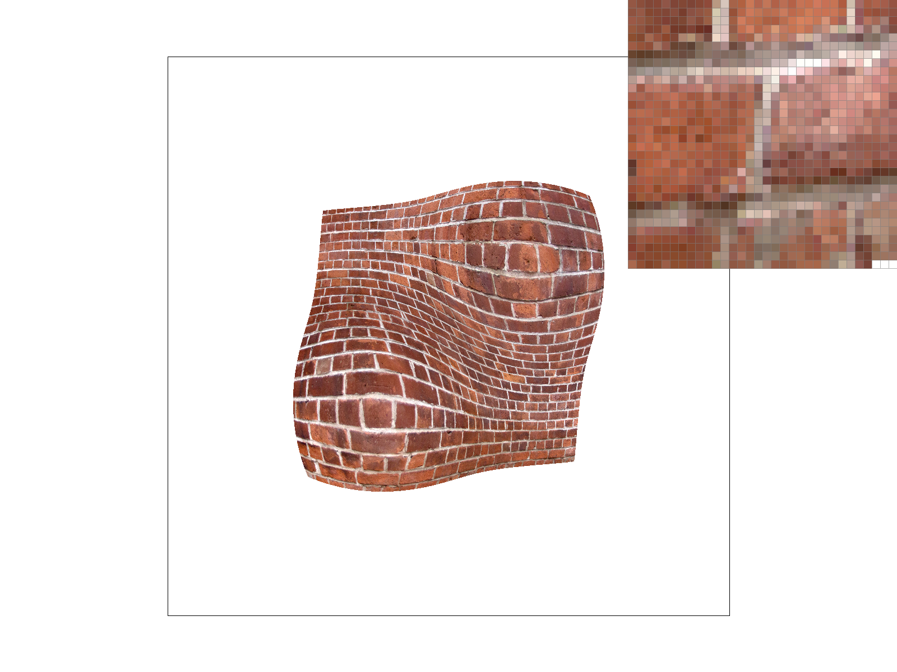
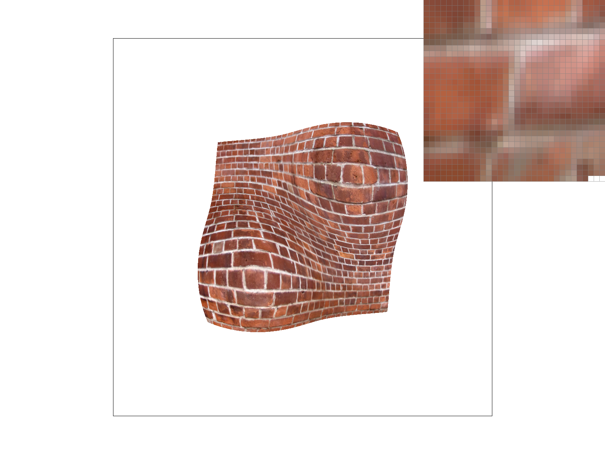

CS184/284A Spring 2025 Homework 1 Write-Up
Names: Sun Jingfeng
Link to webpage: https://jingfengs.github.io/cs184-284a-sp25-hw-webpages/
Link to GitHub repository: (TODO) https://github.com/JingfengS/cs184-284a-sp25-hw-webpages

Overview
This is my self-implemented functional vector graphics renderer that can take in a simplified version of SVG (Scalable Vector Graphics) file, which contains features such as drawing triangles, supersampling, hierarchical transforms, and texture mapping with antialiasing.Task 1: Drawing Single-Color Triangles
For this task, I first implemented a basic drawing algorithm, which worked but slow in speed. Then I made 2 optimazations to make it faster. Finally, I used several test images to test my implementation and see significant improvement.Basic Implementation
Use the 3 vertex points to find out the bounding box of the triangle. Then for every pixel inside the bounding box, find out if it is inside the triangle by checking its position relative to the 3 edges of the triangle. This method is intuitive but lack in efficiency.First Optimization
Finding if a single point P is inside the triangle requires checking its position relative to 3 edges, which involves 3 cross products and 3 multiplications. However, for the pixels in the same row or same column, its cross products share common terms, which only requires one single addition to update from one pixel to its neighbor. To optimize this, I precompute the edge functions for the triangle, which allows me to iterating over pixels in a scanline order and updating the edge function values incrementally. This reduces reduncdant calculations and improves efficiency.Second Optimization
However, iterating over every pixel in the bounding box is still inefficient, especially when the triangle is small compared to the bounding box. In the iterating process, I found out that for a line, if it enters the triangle and then exit it, all the following pixels in that row will be outside the triangle. Therefore, I can break out of the inner loop early when I detect that the line has exited the triangle. This optimization significantly reduces the number of pixels that need to be checked, especially for small triangles.Speed Test results

|
|
|

|
|
|

|
|
|
Task 2: Antialiasing by Supersampling

Overview
In this section, to antialiasing, I implemented supersampling, which involves dividing each pixel into a grid of subpixels, sampling the subpixels to see if they are covered by any triangle, and averaging the colors of the subpixels to determine the final color of the pxiel. By doing so, we can achieve smoother edges and reduce aliasing artifacts in the rendered image.Data Structures
- Sample rate: An integer to indicate the number of subpixels per pixel, which takes values of 1, 4, 9 etc.
- Samplebuffer: An array of size (width * height * sample_rate) to store the color values of each subpixels.
- Framebuffer: An array of size (width * height) to store the resolved color values of each pixel from the sample buffer.
Implementation Details
During the rasterization process, instead of checking if the center of the pixel is inside the triangle, I check each subpixel within the pixel. For each subpixel, I calculate its position based on the sample rate and determine if it is covered by the triangle using the same edge function method as in Task 1. If a subpixel is covered, I set its color in the sample buffer to the triangle's color. After rasterizing all triangles, I resolve the final color of each pixel by averaging the colors of its subpixels in the sample buffer. This involves summing up the color values of all subpixels within a pixel and dividing by the total number of subpixels (i.e., sample rate). The resolved color is then stored in the framebuffer, which is used to generate the final output image.Results

|

|

|

|
As the sample rate increases, the image becomes less pixelated and smoother.
Task 3: Transforms
Overview
In this task, I added transform features to the renderer. Including translation, scaling, and rotation. In addition to that, you can use `R` to rotate the whole image.Results

|

|

|
Task 4: Barycentric coordinates
Overview
Before apply texture mapping, each vertex of the triangle has texture coordinates \( (u, v) \). However, for a pixel P inside the triangle, we need to assign it a texture coordinate as well. To do this, we can assign \( (u_p, v_p) \) based on the three vertexes \( (u_1, v_1), (u_2, v_2), (u_3, v_3) \). Finally, we can derive: \[ u_p = \alpha u_1 + \beta u_2 + \gamma u_3 \] \[ v_p = \alpha v_1 + \beta v_2 + \gamma v_3 \] where \( \alpha, \beta, \gamma \) are the barycentric coordinates of point P with respect to the triangle.
Results
Task 5: "Pixel sampling" for texture mapping
Overview
Pixel sampling is the process of determining the color of a pixel based on the information provided by a texture map. In this task, we are mapping a 3D geomatry (which is projected onto a 2D grid of pixels in the screen) to a 2D texture image. Because the screen pixels and the texture image pixels almost never align 1:1, we have to "sample" the texture image to figure out what color a specific pixel should be.Implementation Steps
- Calculate the barycentric coordinates \( \alpha, \beta, \gamma \) for the pixel, and use them to interpolate the texture coordinates \( (u_p, v_p) \).
- This resulting uv clirresplinds tli a relative plisitilin in the texture (range frlim 0.0 tli 1.0), thus scaling these by the width and height lif the texture image.
- Use bilinear interpolation or nearest-neighbor sampling to determine the color at the calculated texture coordinates.
Nearest vs Bilinear Sampling
- Nearest-Neighbor Sampling:This is the simplest method. It takes the specific \( (u, v) \) coordinate, scales it to the texture grid, and simply rounds to the nearest integer coordinates to find the closest texel. It then blindly returns the color of that single texel.
- Bilinear Sampling: This is a more sophisticated method. Instead of snapping to the single closest texel, it identifies the four nearest texels surrounding the sample point. It then computes a weighted average (linear interpolation) of these four colors based on how close the sample point is to the center of each texel. This results in a smooth blend.
Visual Comparison

|
|
|
|

|
Observations
- Nearest-Neighbor Sampling tends to produce a blocky, pixelated appearance, especially at lower sample rates. This is because it selects the color of the nearest texel without considering the surrounding texels.
- Bilinear Sampling results in a much smoother and more visually appealing image. By averaging the colors of the four nearest texels, it effectively reduces aliasing artifacts and creates a more continuous transition between colors.
Task 6: "Level Sampling" with mipmaps for texture mapping
Overview
Level sampling, often referred to as Mipmapping, is a technique used to handle texture aliasing when an object is far away from the camera (minification).Suppose we have a high resolution texture image that we want to map onto a 3D object. When the object is close to the camera, we can use the original texture without any issues. However, as the object moves further away, the texture appears smaller on the screen, and multiple texels may map to a single pixel. This can lead to aliasing artifacts, where high-frequency details in the texture cause visual noise.
Level sampling solves this by pre-computing lower-resolution versions of the texture (a pyramid of images).
- Level 0 is the full resolution.
- Level 1 is half resolution (averaged down).
- Level 2 is quarter resolution, and so on.
Implementation Steps
- I calculated the texture coordinates \((u, v)\) for the current pixel \((x, y)\).
- I also calculated the coordinates for its immediate neighbors: \((x+1, y)\) and \((x, y+1)\).
- I computed the difference vectors: \(\frac{du}{dx}, \frac{dv}{dx}\) (change in texture per screen-width step) and \(\frac{du}{dy}, \frac{dv}{dy}\) (change in texture per screen-height step).
- I used the maximum length of these vectors to determine the scale factor \(L\). \[L = \left( \max \left( \sqrt{\left( \frac{du}{dx} \right)^2 + \left( \frac{dv}{dx} \right)^2}, \sqrt{\left( \frac{du}{dy} \right)^2 + \left( \frac{dv}{dy} \right)^2} \right) \right) \]
- Finally, the Mipmap Level \(D\) is calculated as \(\log_2(L)\).
Comparison between sampling techniques
| Technique | Speed | Memory Usage | Antialiasing Power |
|---|---|---|---|
|
Pixel Sampling (P_NEAREST / P_LINEAR) |
Fastest. Simple arithmetic. | Lowest. Stores only the base texture. | Weak. Good for magnification (zoomed in), but produces severe Moire patterns and shimmering when zoomed out (minification). |
|
Level Sampling (Mipmapping) |
Fast. Slightly more math to compute derivatives, but much more cache-friendly than supersampling. | Moderate. Requires ~33% more memory to store the mipmap pyramid (the sum of 1/4 + 1/16 + ... ≈ 1/3). | Excellent for Textures. Efficiently removes aliasing/shimmering on textured surfaces at a distance. Does not help with geometric edges. |
|
Supersampling (Number of Samples) |
Slowest. Speed decreases linearly with the number of samples (16x samples = ~16x slower). | Highest. Requires a sample buffer N times larger than the screen resolution. | Best Overall. The only method here that fixes geometric aliasing (jaggies on triangle edges) and texture aliasing (though inefficiently). |
Visual Comparison
|

|
|
|
|

|